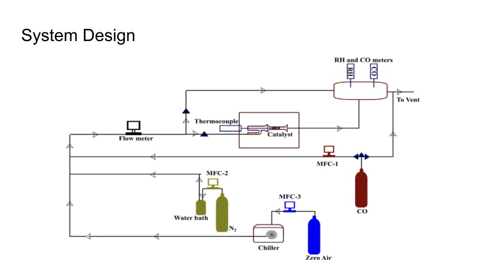

- Objective: Characterize a catalyst for converting carbon monoxide to carbon dioxide for use aboard the International Space Station (ISS).
- Contribution: Assisted in designing and assembling the testing system, which included a fixed bed reactor, mass flow controllers, thermocouple, hydrometer, and gas detection devices.
Conducted experiments to characterize catalyst behavior. Interpreted and presented data, and contributed to a published peer-reviewed conference paper.
- Results: Successfully characterized the catalyst over a temperature range of 0-20°C and humidity range of 15-80%. Produced a peer-reviewed research paper (Evaluation of a new commercial catalyst for CO oxidation for environmental control and life support applications).